“Coffee & Cream” Documentation by “Ocholabs” v1.0

Created: 16/05/2013
By: Ocholabs
Email: contact@ocholabs.com
Thank you for purchasing my HTML template. If you have any questions that are beyond the scope of this help file, please feel free to email via my user page contact form here. Thanks so much!
Table of Contents
A) Skin - top
Coffee & Cream modules can easily be styled by changing a single CSS Class.
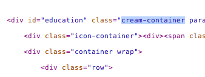- Coffee Container: the dark container -
.coffee-container - Cream Container: the light container -
.cream-container - Sugar Container: the colored container -
.sugar-container
B) Icons - top
Coffee & Cream includes Glyphicons
1) - Change a section icon
Section icons are optionals, they can be removed.
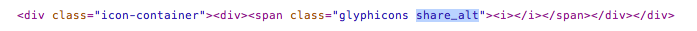To change the icon, just change the class to one listed below.
2) - Change social media
Social media icons are available in the social media block.
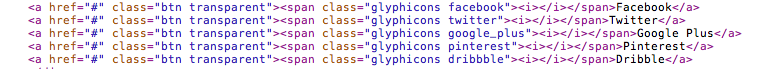To change the icon, just change the class to one listed below.
All available icons are listed below
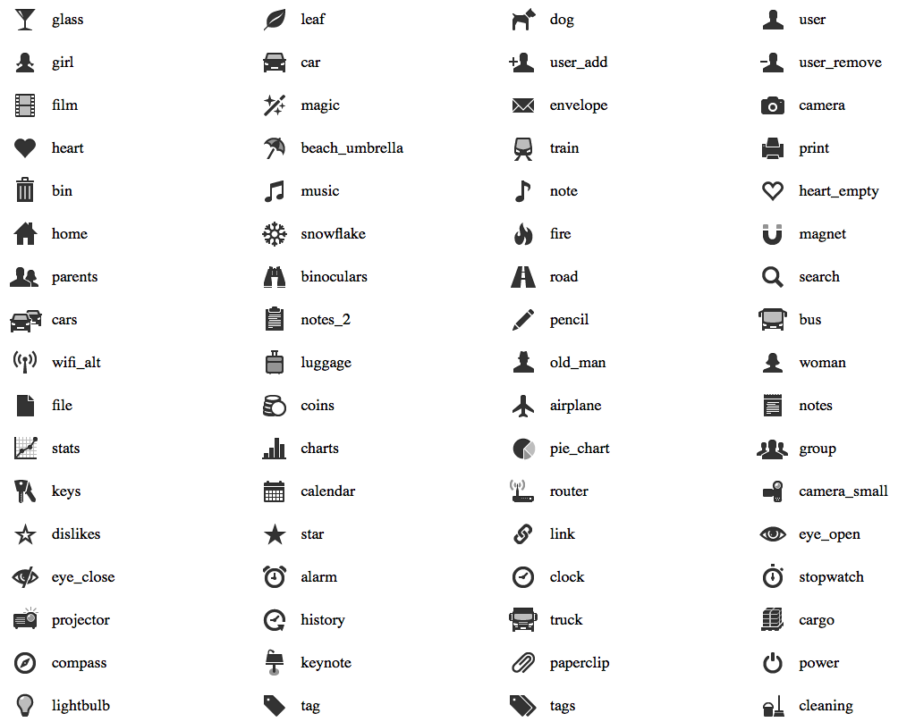 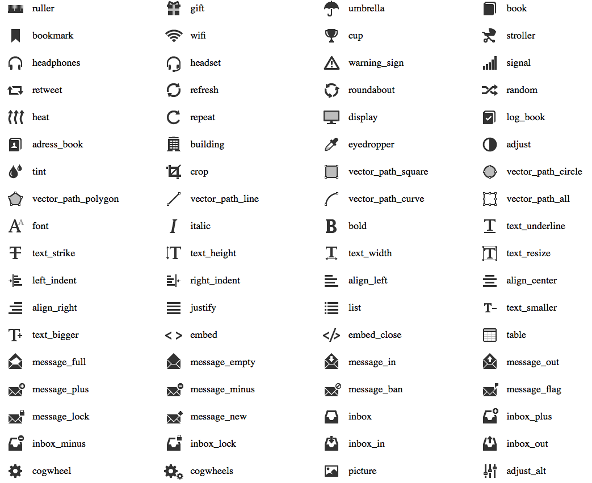 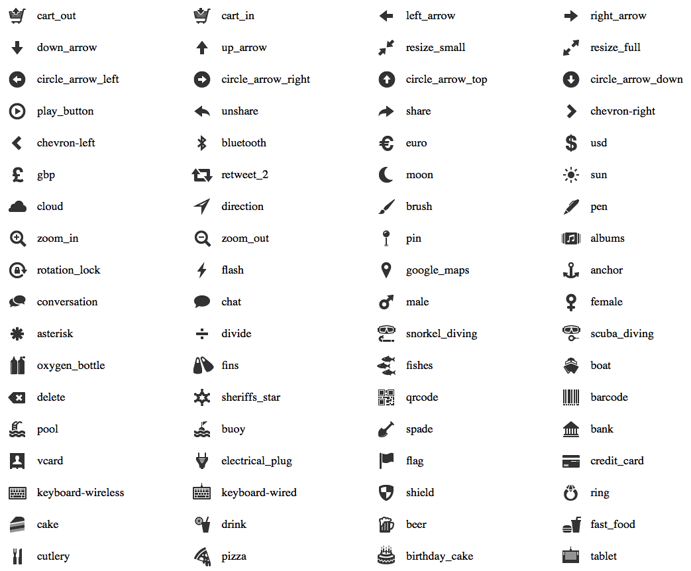
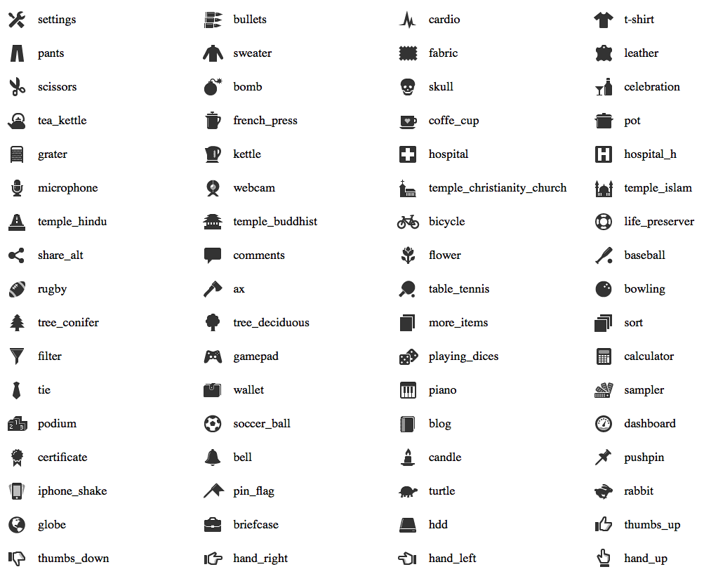
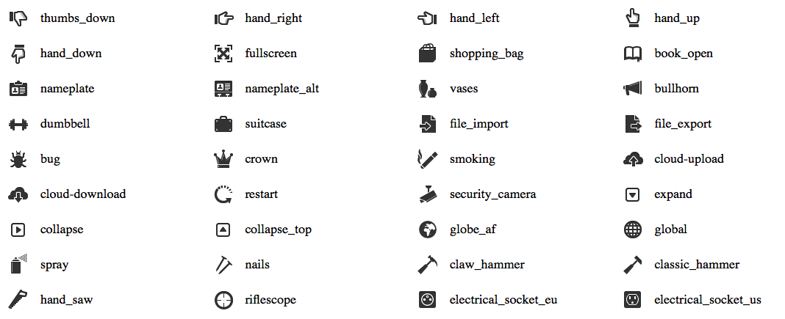
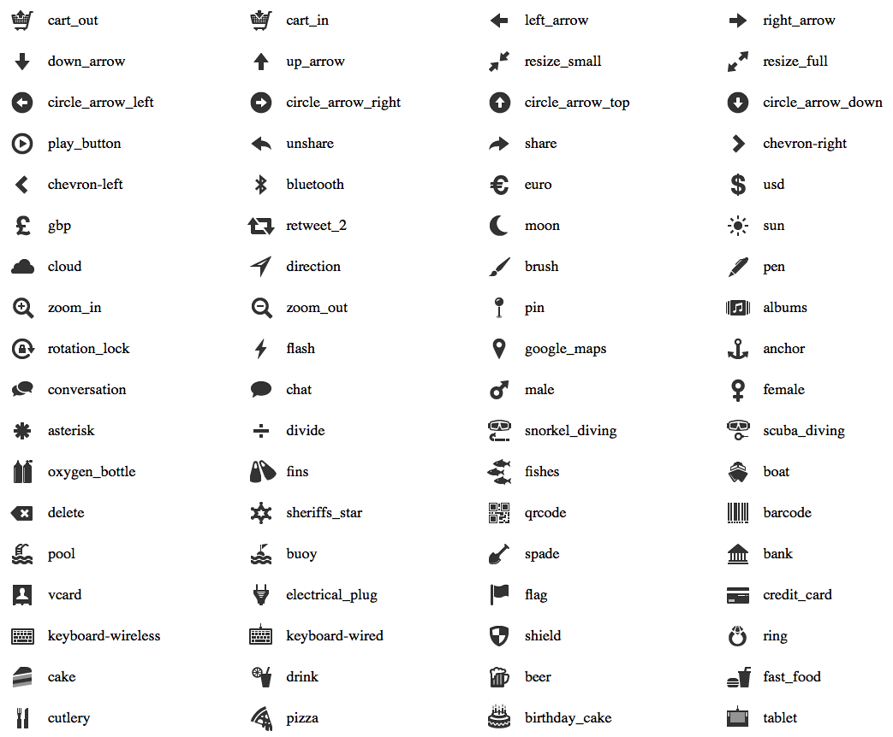
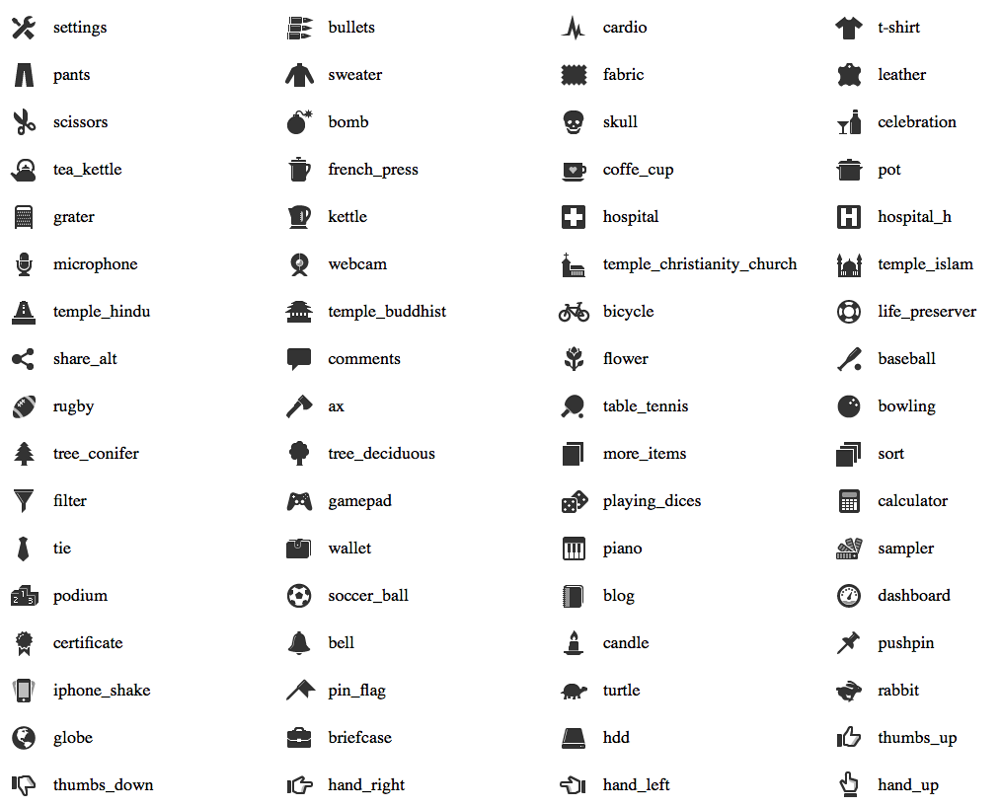
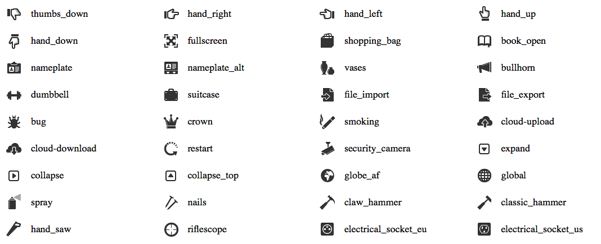C) Parallax Background - top
1) - Set a parallax background
Using Parallax background is optional.
To create a parallax background container, set the .parallax CSS Class to the container
Then add two data attributes :
data-speed="XXX": replace XXX by an int value. First containers need a lower value than last ones. this will help you to center the background when the container is viewed.data-offsetY="XXX": replace XXX by an int value. You can vertically position your background using this value. Set to 1 if not needed.
In the CSS file, add the picture you want as the background image.
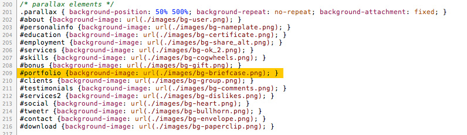2) - Create a background image from Glyphicon Font
Some Backgrounds are already available, but you can create any other one using the glyphicons font included in this template.
The font is located in the fonts directory of the html template. Install it (glyphicons-regular.ttf) on your computer, then open the background-icon.psd
- Hide the help folder
- Change the text value of the icon in the "Text Icon using Glyphicon Font" named layer
This value can be found using Firebug - Hide the background layout
- Save as transparent PNG
I personally use these settings:
- in
.coffee-container: alpha opacity of the font layer = 20% - in
.cream-container&.sugar-container: alpha opacity of the font layer = 10%
D) Portfolio - top
1) - Filters
Coffee & Cream includes a portfolio. Filterings are provided by the isotope plugin
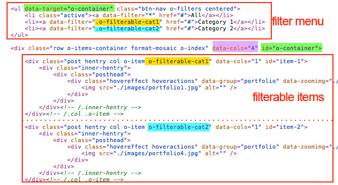- Set a class to the portfolio items for each available filters
- then fill the data-filter attribute of the filters with the class of the portfolio items
- The filters container (
ul) must have the id value of the.o-items-containerin thedata-targetdata element (green highlight in picture).
2) - Number of columns
Change the .o-items-container value for data-cols="XXX" where XXX is the number of columns you want (pink highlight in picture).

Thank You
Once again, thank you so much for purchasing this HTML template. As I said at the beginning, I'd be glad to help you if you have any questions relating to this theme. No guarantees, but I'll do my best to assist.
OCHOLABS